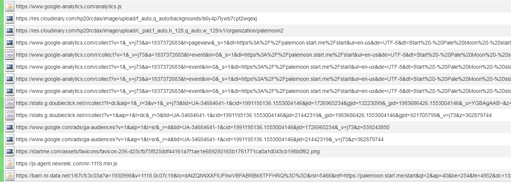

Pale Moon
Pale Moon é um fork de uma versão antiga do Firefox, antes da mudança na interface do usuário que desanimava muitas pessoas. A versão 28.4 foi usada para escrever este artigo.
Nível de Spyware: Médio
Depois de seguir o guia de mitigação, este software é classificado como Não é Spyware.
Conecta-se a serviços de análise e essas requisições só podem ser evitadas em execuções subsequentes. Tem listas de bloqueio, sugestões de pesquisa e atualizações automáticas. Envia certificados SSL dos sites que você visita.
Google analytics na Página Inicial
Por padrão, a página inicial do Pale Moon é definida como https://palemoon.start.me, e automaticamente fará uma conexão com ela na primeira execução. Esta página se conecta ao Google Analytics, que pode fazer impressões digitais e rastreá-lo pela internet.
Atualizações automáticas
Pale Moon irá atualizar-se automaticamente, addons e motores de busca, bem como o seu arquivo blocklist.xml com os addons que ele considera "malicioso". Alguns deles podem ser desativados na GUI e outros apenas em about:config.
Sugestões de busca
O mecanismo de pesquisa padrão é o DuckDuckGo que respeita a privacidade, no entando, as sugestões de pesquisa são habilitadas por padrão, o que pode enviar uma solicitação para cada letra que você digitar, enquanto você permanece no navegador até pressionar Enter. Pode ser desativado clicando com o botão direito do mouse na barra de pesquisa.
Consulta OSCP
Verificará automaticamento o certificado SSL de cada site para ver se é válido, o que exige enviá-lo a terceiros. Pode ser desligado a partir da GUI.
Não relacionado a Spyware, mas vale a pena pontuar
Bloqueando complementos de aprimoramento de privacidade
Pale Moon, por padrão, não permitirá que você instale o addon de aprimoramento de privacidade NoScript, citando esta justificativa para bloquear um addon tão importante: "O NoScript é conhecido por causar problemas graves com um grande (e crescente) número de sites. Para cada site visitado, o NoScript causará problemas de exibição e problemas funcionais."[1] Para desabilitar esta lista de bloqueio, defina extensions.blocklist.enabled para falso em about:config.